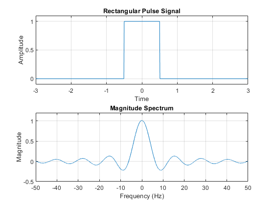

clc; close all; clear all;
T = 0.01;
T1 = 100;
t = -T1:T:T1-T;
x = rectpuls(t, 1);
N = length(t);
Fs = 1/T;
w = linspace(-Fs/2, Fs/2, N);
ft = zeros(size(w));
for k = 1:N
ft(k) = sum(x .* exp(-1i * w(k) * t)) * T;
end
figure;
subplot(2,1,1);
plot(t, x);
xlabel('Time');
ylabel('Amplitude');
xlim([-3, 3]);
ylim([-0.1, 1.1]);
grid on;
title('Rectangular Pulse Signal');
subplot(2,1,2);
plot(w, ft);
xlabel('Frequency (Hz)');
ylabel('Magnitude');
ylim([-0.5, 1.2]);
grid on;
title('Magnitude Spectrum');
Warning: Imaginary parts of complex X and/or Y arguments ignored.
